AML PRODUCT REFERENCE · UI / FUNCTION / WORKFLOW
Lucinity Case Manager
UI와 실제 운영 흐름 분석
제공된 24페이지 PDF의 Lucinity 화면을 원본 그대로 분리해, 각 화면에서 무엇을 보고 어떤 결정을 내리는지 한국어로 정리했습니다. 번호는 원본 캡처의 실제 영역 중앙에 배치했고, 바로 아래 와이어프레임과 같은 번호로 연결했습니다.
목차
전체 구조: 탐지 엔진 뒤의 조사 운영 플랫폼
| 영역 | 대표 UI | 현업 목적 | 우리 프로젝트 대응 |
|---|---|---|---|
| Alert intake | Workspace / Workboard | 여러 탐지 소스의 경보를 한 큐에서 분류·배정 | GNN 점수와 Rule 점수를 통합한 경보 큐 |
| Investigation | Case Summary / Observations | 고객, 거래, 관련 주체, 과거 사건을 한 맥락에서 검토 | 고객 360 + 거래 그래프 + 유사 사례 |
| Decision | Task checklist / Disposition | 검토 누락을 막고 정상·의심·오탐 결론을 기록 | 설명 가능한 위험 근거와 분석가 피드백 |
| Reporting | SAR Form / Preview / Filing | 사건 근거를 규제 보고서로 전환하고 승인·제출 | STR 초안·근거 연결·승인 이력 |
| Operations | SLA / Workload / QA | 기한, 담당자 부하, 품질 기준과 감사 추적 관리 | 운영 KPI·SLA·모델 성능 피드백 루프 |
서비스 운영 흐름
1. Workspace — 통합 경보·사건 작업대
제공 PDF 3쪽 · Lucinity Workspace
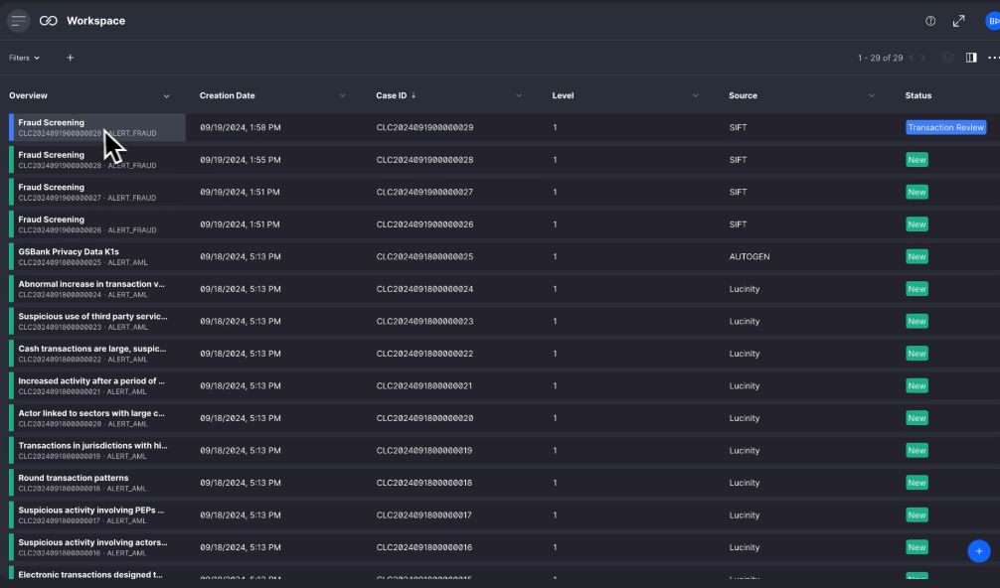
12345- 1Overview
경보 제목·행동 유형과 Case 식별자를 보여줍니다. - 2Case ID / Level
사건 번호와 조사 단계를 구분합니다. - 3Source
Lucinity, 외부 TM, Fraud 등 발생 원천입니다. - 4Status
New, Review, Assigned 같은 현재 업무 상태입니다. - 5새 항목
권한에 따라 사건·Alert를 수동 생성합니다.
이 화면의 성격
대시보드보다는 운영 큐입니다. 필터, 정렬, 저장된 보기로 내 업무만 보거나 특정 시나리오·단계·SLA 위반 건을 분리합니다.
GNN 프로젝트 적용
GNN risk scoreRule scoreQueueSLA를 별도 열로 제공하고, 모델 버전과 산출 시각도 추적해야 합니다.
2. Case Summary — 고객 360형 사건 조사 화면
제공 PDF 3쪽 · Fraud Activity Burst Case
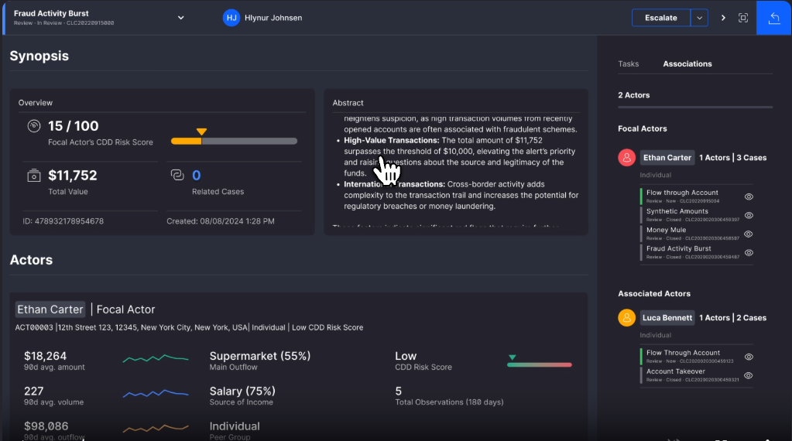
12345- 1Overview
CDD 위험점수, 총 거래금액, 관련 사건 수와 생성일입니다. - 2Abstract
의심 이유와 핵심 인사이트를 조사 서술형으로 요약합니다. - 3Actor 360
중심 고객의 KYC/CDD, 거래 통계, 수입·지출 성격과 관찰 건수입니다. - 4Associations
중심 주체·연관 주체와 연결된 계좌·Case를 따라갑니다. - 5Escalate
사건을 다음 조사 단계나 관리 큐로 승격합니다.
3. Fraud Investigation — 거래 단위 즉시 판정
제공 PDF 4쪽 · Fraud Screening Observation
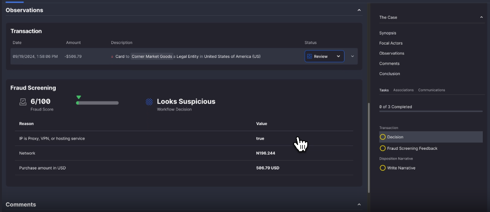
1234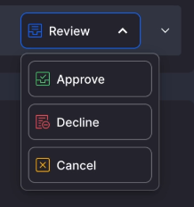
5- 1Transaction
검토할 결제·이체의 시각, 금액, 상대방입니다. - 2Fraud Screening
점수, 자동 판정, 판정에 사용한 이유와 값을 보여줍니다. - 3Decision task
거래 처리 결정을 필수 업무로 만듭니다. - 4Feedback / Narrative
오탐 여부와 조사 서술을 남겨 재학습·감사에 사용합니다. - 5Disposition
Approve·Decline 등 업무 결과를 확정합니다.
4. Sanctions Investigation — 제재 목록 후보 비교
제공 PDF 6쪽 · Sanctions Match
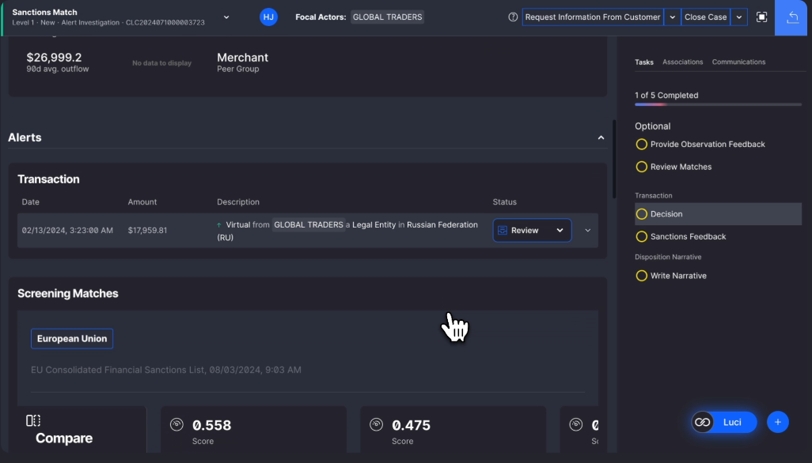
123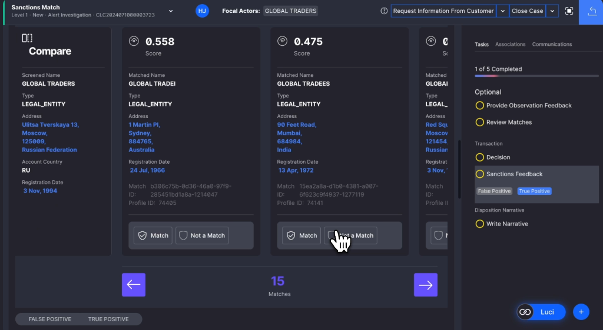
456- 1거래 맥락
제재 의심 주체와 거래 상대국을 확인합니다. - 2Screening Matches
어떤 제재 목록에서 후보가 나온 것인지 봅니다. - 3조사 체크리스트
후보 검토→결정→피드백→서술 순서를 강제합니다. - 4비교 기준 대상
실제 고객·법인 프로필입니다. - 5후보 A
높은 유사도 후보의 상세 속성입니다. - 6후보 B
두 번째 후보와 차이를 비교합니다.
5. Experience Manager — 조사 UI·워크플로 구성
제공 PDF 8·10쪽 · Experience Manager
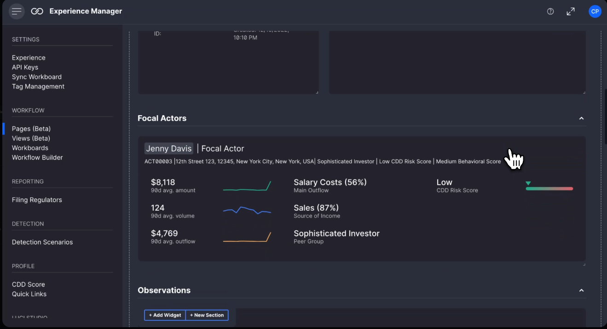
1234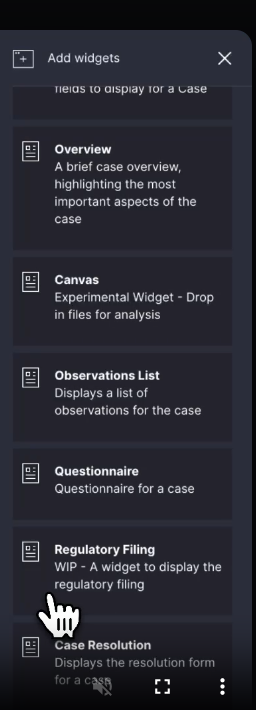
567- 1관리 메뉴
Pages, Views, Workboards, Workflow Builder를 선택합니다. - 2조사 페이지 Canvas
실제 분석가가 사용할 화면을 미리 봅니다. - 3Widget 배치 영역
카드·섹션을 드래그해 업무 화면을 구성합니다. - 4Add Widget / Section
새 기능 블록이나 구획을 추가합니다. - 5Overview
사건 핵심 지표 위젯입니다. - 6Observations / Questionnaire
근거 목록과 표준 질문을 배치합니다. - 7Regulatory Filing / Resolution
규제 보고와 최종 결론 위젯입니다.
6. AI 분석 보조 — 요약·자금 흐름·Narrative
제공 PDF 5·8·15쪽 · Case Summary, Money Flow Analysis, Filing Narrative
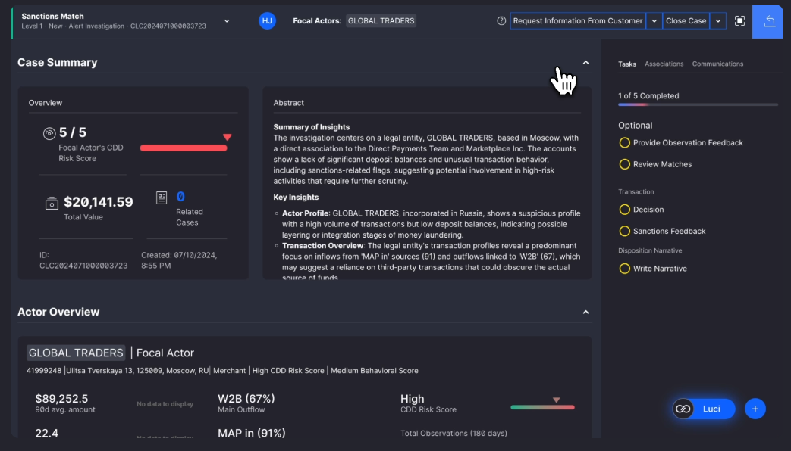
1234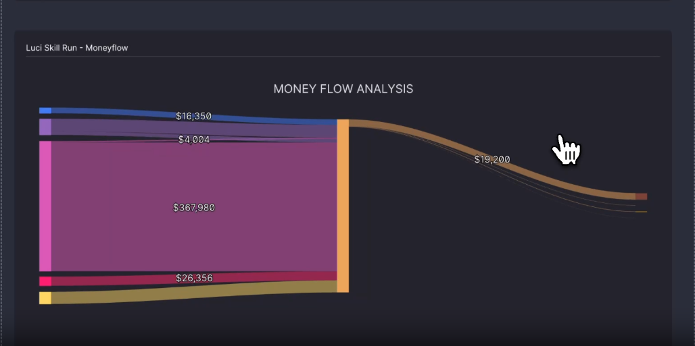
567- 1정량 위험 개요
CDD 위험도·총액·관련 Case 등 사실값입니다. - 2AI/규칙 기반 요약
주요 의심 정황과 검토 포인트를 서술형으로 정리합니다. - 3분석가 업무
AI 제안과 별개로 사람이 완료해야 할 체크리스트입니다. - 4Luci
요약·질문·Narrative 작성을 돕는 보조 인터페이스입니다. - 5자금 유입
다수 계좌·거래에서 들어온 금액입니다. - 6집중 지점
자금이 모이는 중심 계좌·주체입니다. - 7자금 유출
집중 후 분산·해외송금되는 경로입니다.
7. Regulatory Reporting — SAR 작성·검토·승인
제공 PDF 12쪽 · SAR Form / Filing
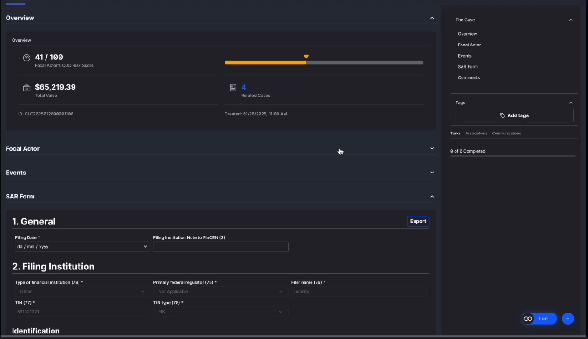
1234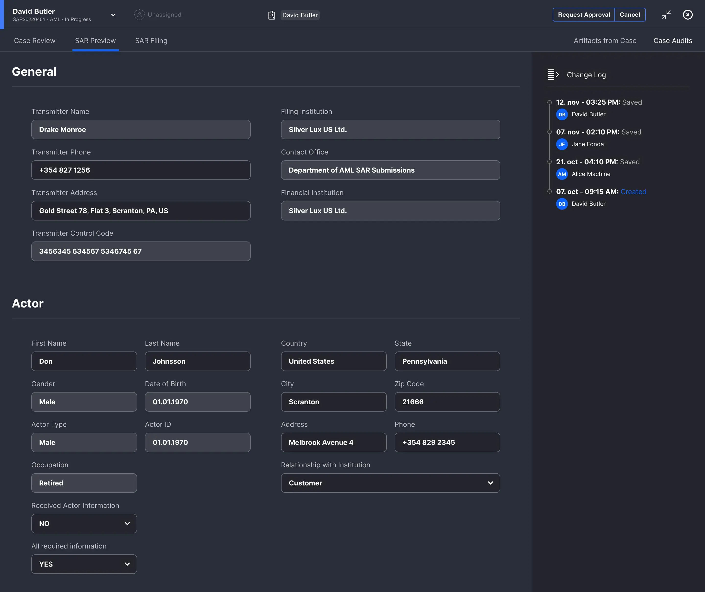
567- 1Case Overview
위험도·총액·관련 사건을 보고서에 연결합니다. - 2SAR Form
General, Filing Institution, Actor, Transaction 등 법정 필드를 입력합니다. - 3Tags / Tasks
분류 태그와 승인 전 필수 작업입니다. - 4Luci / Export
Narrative 보조와 보고서 내보내기입니다. - 5SAR Preview
제출 전 전체 양식을 검토합니다. - 6SAR Filing
승인된 보고서를 제출 단계로 넘깁니다. - 7Change Log
작성·수정·저장 이력을 감사 증적으로 남깁니다.
8. 케이스 태깅·대량 작업 — 큐 운영 자동화
제공 PDF 15·17쪽 · Tag Management / Bulk Actions
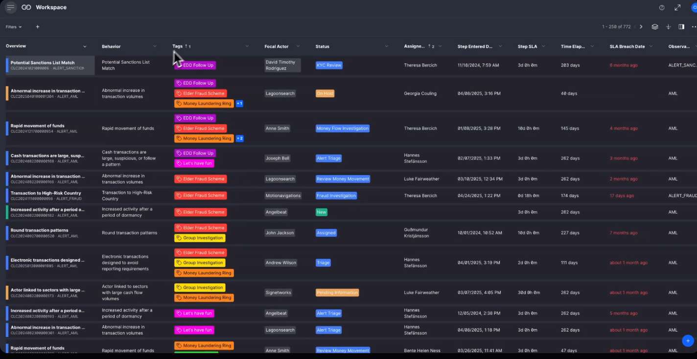
1234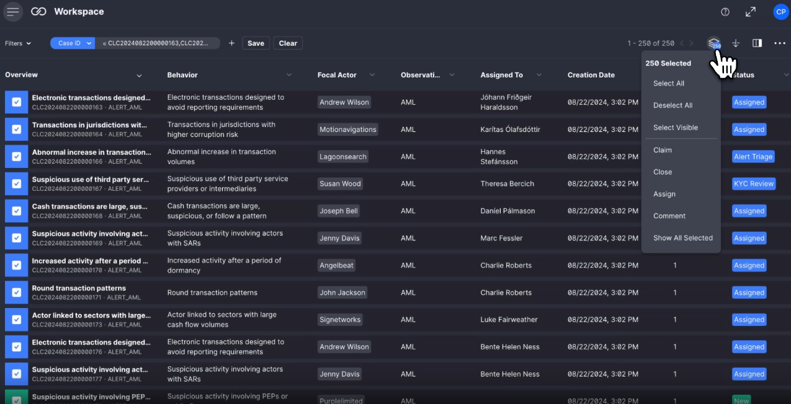
567- 1Tags 열
사건에 부착된 업무 라벨을 표시합니다. - 2복수 태그
EDD, Fraud, Laundering Ring 등 여러 관점을 함께 분류합니다. - 3Status
현재 조사 단계입니다. - 4SLA 열
단계 진입 시각, 목표시간, 위반일을 추적합니다. - 5다중 선택
처리할 사건들을 체크합니다. - 6선택 메뉴
전체·현재 화면 선택을 제어합니다. - 7Bulk action
접수·종료·배정·댓글을 일괄 실행합니다.
9. 작업·커뮤니케이션 — 조사 누락과 반복 문의 방지
제공 PDF 17·18쪽 · Communications / Tasks
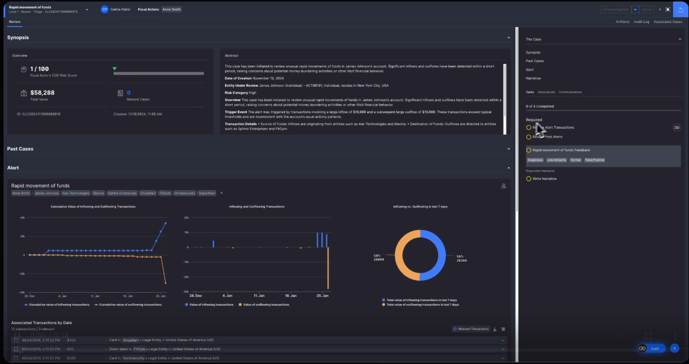
123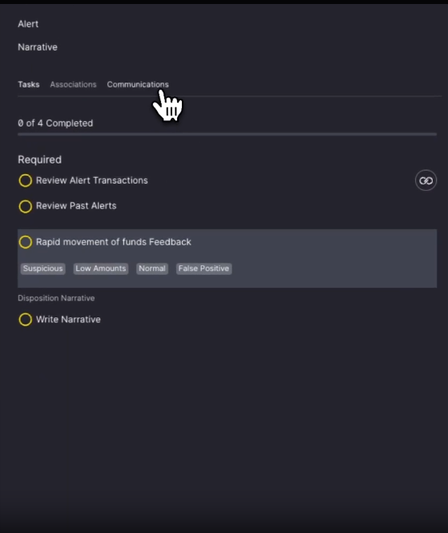
456- 1Communications 탭
사건 관련 소통 기록을 선택합니다. - 2커뮤니케이션 카드
발신자, 시각, 채널, 제목, 본문 요약입니다. - 3See More
전체 이메일·통화 메모·첨부를 펼칩니다. - 4Tasks 탭
표준 조사 절차를 체크리스트로 관리합니다. - 5Scenario feedback
의심·정상·오탐 등 모델 피드백을 선택합니다. - 6Disposition Narrative
최종 판단 근거를 서술형으로 남깁니다.
GNN 기반 AML 프로젝트에 적용한다면
| 우선순위 | 필수 화면 | 반드시 보여줄 정보 | 구현 메모 |
|---|---|---|---|
| 1 | Alert Workboard | GNN 점수, Rule 점수, 시나리오, 고객, 금액, SLA, 담당자, 상태 | 정렬·필터·저장된 보기·대량 배정 |
| 2 | Case / 고객 360 | KYC/CDD, 거래요약, 과거 Alert/Case, 관련 계좌·고객, 타임라인 | 데이터 원천과 기준시각 표시 |
| 3 | 그래프 조사 | 위험 경로, 중심성, 커뮤니티, 연결 사유, 금액·빈도·기간 | 점수 설명보다 의심 경로를 먼저 제시 |
| 4 | Decision / Feedback | 정상·의심·오탐, 이유코드, Narrative, 첨부, 승인 | 분석가 피드백을 재학습 데이터와 분리·버전 관리 |
| 5 | STR·운영 | 보고서 초안, 근거 링크, SLA, 업무량, QA, 감사로그 | 권한·4-eyes·변경 이력 필수 |
추천 MVP 플로우
- GNN·Rule 엔진이 고객/계좌 단위 위험 Alert와 근거 subgraph를 생성
- Workboard가 위험도·금액·SLA로 우선순위를 계산하고 담당자에게 배정
- 분석가가 고객 360에서 KYC, 거래, 과거 사건을 확인
- 그래프 화면에서 1~3 hop 위험 관계와 자금 흐름을 검증
- 추가 정보 요청 또는 Case 승격 후 결론·이유코드·서술형 의견 기록
- 의심 건은 STR 초안으로 연결하고 승인·제출, 오탐은 모델 개선 데이터로 환류
자료 범위와 출처
- 주 분석 자료: 사용자가 제공한 24페이지 PDF — Lucinity Case Manager source PDF
- PDF가 명시한 출처: Lucinity Case Management
- 추가 제품 체험 링크: Lucinity Platform in Action — Luci
화면의 사람 이름, 금액, Case ID는 데모 데이터입니다. 본 문서의 한국어 해설과 와이어프레임은 제공 PDF의 UI를 바탕으로 작성한 분석용 2차 자료입니다.